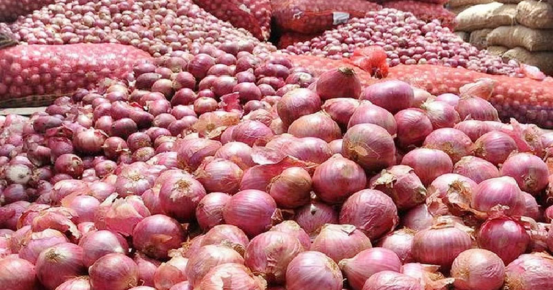
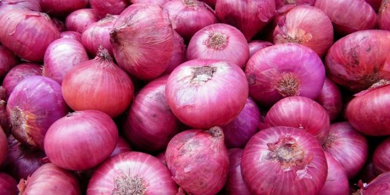
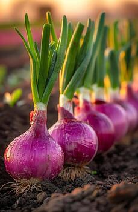
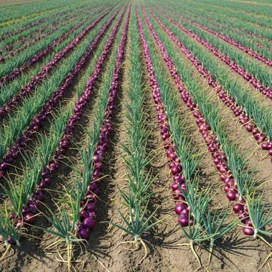
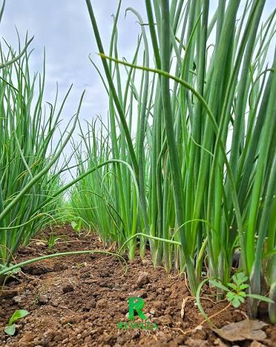

Onion Production
Usually covers around 2 acres of the farm per season.

- Growth Duration: 3 to 4 months depending on variety.
- Varieties : Jambar F1, Red Ponoy F1, Red Wave.
- Bed Preparation: Construct raised beds 1 metre wide to prevent stepping on seedlings. Ensure a finely tilled surface free of large soil clumps so small seeds can easily germinate.
- Soil Type: Deep, non-compacted, fertile sandy or silty loam with fine tilth.
- Spacing: 0 cm from one plant to the next, often utilizing square or row patterns to optimize population density
- Fertilizer: DAP at transplanting for root growth, followed by regular nitrogen top-dressings (e.g., Calcium Ammonium Nitrate) up until the 8th leaf stage.
- Pests & Diseases: major threats like thrips, aphids, and damping-off or purple blotch diseases.
- Yield: Bulb onions typically yields between 10 to 20 tonnes (10,000 to 20,000 kg) per acre.
Farm Gallery & Harvesting



